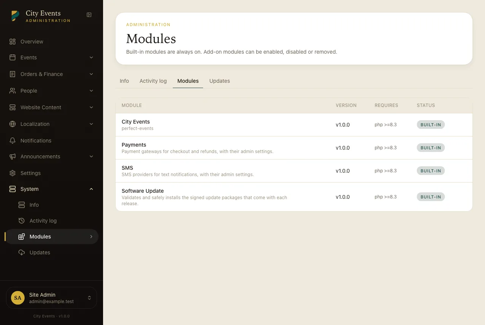

Modules
The built-in Payments, SMS and Software Update modules — what they are and where their settings live.
Some features ship as self-contained modules inside script/modules/. They're listed
under Admin → System → Modules.
| Module | What it does | Settings |
|---|---|---|
| Payments | The payment gateways used at checkout and for refunds. | Admin → Settings → Payment gateways. See Integrations. |
| SMS | Text-message delivery for notifications. | Admin → Settings → SMS. See SMS. |
| Software Update | Checks and installs the signed update package that comes with each release. | Admin → System → Updates. See Updating the product. |

Built-in modules are always on
All three are part of the product: they can't be disabled or removed, they need no licence key of their own, and they're updated together with everything else by the normal update package. You never download or update a module separately.
Add-on modules
The Modules page can also enable, disable and remove add-on modules. When you remove one you choose whether to keep its data: tick "Also delete its database tables" only if you're sure — that rolls back the module's migrations and its data is gone for good.